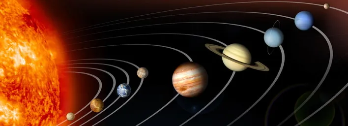

Artist's representation of the Solar System. Image credit: NASA
Please see my ADS Library for papers I have written or co-authored.
Exoplanet Detection & Characterisation
I use the transit and radial velocity (RV) methods to search for and characterise exoplanets. I use observations from ground and space-based telescopes to follow-up and confirm planet candidates, and to characterise confirmed planets and search for additional planets in multi-planet systems.
MUlti-planet M dwarf Systems (MUMS)
I am using a variety of high-resolution spectrographs to collect radial velocity data for cool stars which host multiplanet planets, with a view to measuring the masses of these planets. I am interested in how similar or dissimilar exoplanetary systems are to our own Solar System. I use populations of observed and simulated planets to study planetary system architectures.
Characterising Exoplanet Host Stars
I use the IRTF/SpeX telescope to measure the metallicities of M dwarf stars that host confirmed planets and planet candidates.